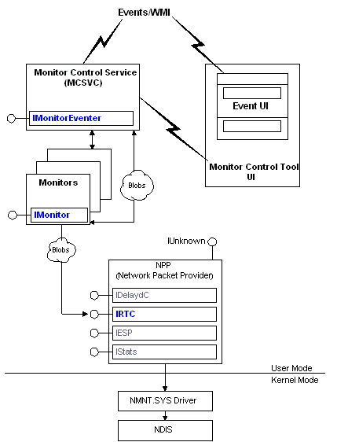

The following figure shows the relationship between monitors and other components of the Network Monitor architecture.

The network traffic is collected (as individual frames) from the NDIS driver. The Network Monitor driver (Nmnt.sys) then routes the frames to a network packet provider (NPP), which in turn captures the data in real-time mode. The NPP is a collection of COM interfaces used to capture data. In this case, the IRTC interface is used to perform a real-time capture.
[!Note]
The NPP is used for delayed and real-time captures. For delayed captures used by experts and parsers, the IDelaydC interface is used.
Â
The monitor then examines the captured data in real-time mode, detecting specific network conditions and generating events as required.
Three other components are used by monitor applications: the Monitor Control Tool, the Monitor Control Service (MCSVC), and the Event Viewer:
Â
Â